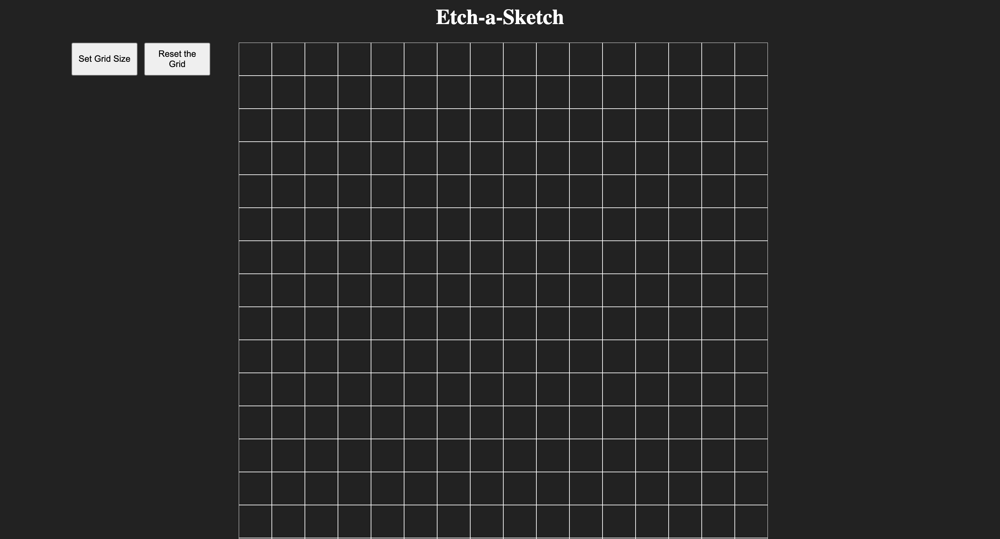
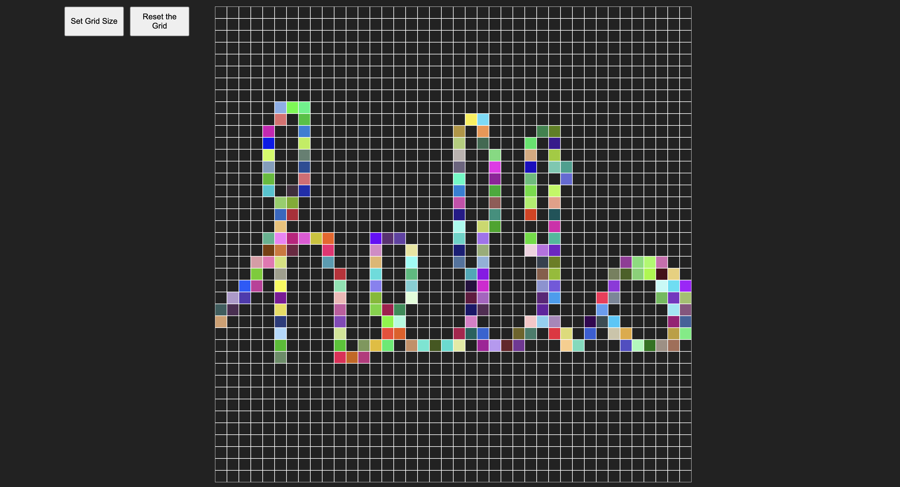

Overview
What I’ve Done
- Implemented a flexible grid system that users can resize (up to a maximum of 100 x 100).
- Used JavaScript to assign random colors to grid squares when hovered over, mimicking a creative sketching effect.
- Included a reset button that allows users to clear the grid and input a new size.

